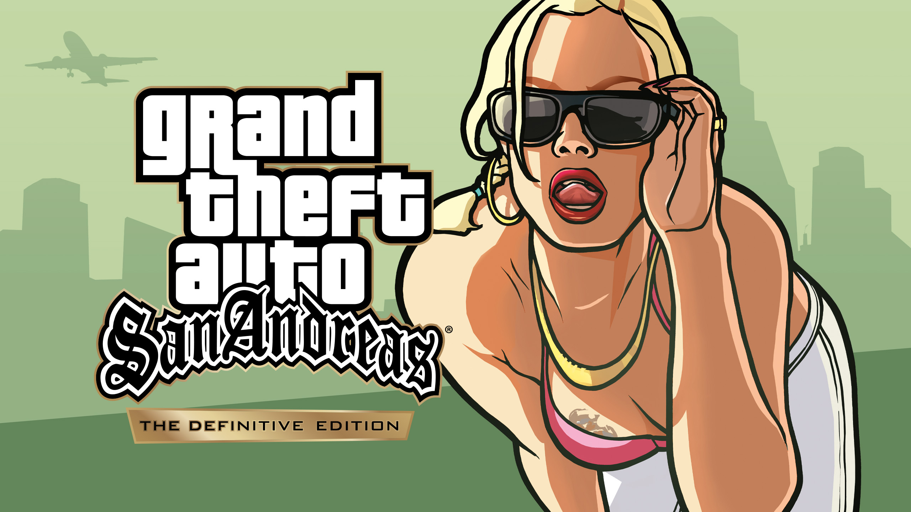
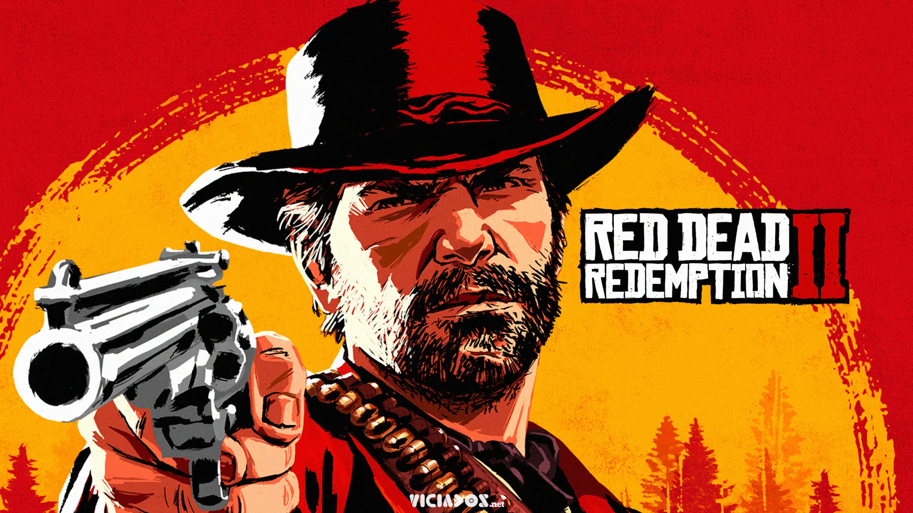
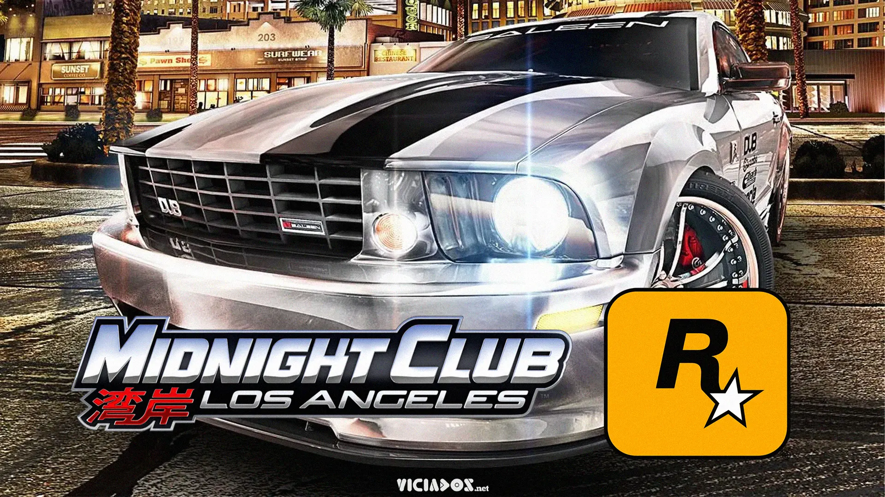

Grand Theft Auto é uma série de jogos eletrônicos criada por David Jones e Mike Dailly, sendo posteriormente gerenciada pelos irmãos Dan e Sam Houser, Leslie Benzies e Aaron Garbut. A maioria dos jogos foi desenvolvida pela Rockstar North e publicada pela Rockstar Games

Grand Theft Auto: San Andreas é um jogo eletrônico de ação-aventura desenvolvido pela Rockstar North e publicado pela Rockstar Games. É o quinto título principal da série Grand Theft Auto e foi lançado em outubro de 2004 para PlayStation 2 e em junho de 2005 para Xbox e Microsoft Windows.
Red Dead Redemption 2 é um jogo eletrônico de ação-aventura desenvolvido e publicado pela Rockstar Games. É o terceiro título da série Red Dead e uma prequela de Red Dead Redemption, tendo sido lançado em outubro de 018 para PlayStation 4 e Xbox One e em novembro de 2019 para Microsoft Windows e Google Stadia.
Midnight Club é uma série de jogos de corrida desenvolvida pela Rockstar San Diego no ano de 2000 e publicado pela Rockstar Games. O jogo é semelhante ao Midtown Madness, jogo antecessor da série também criada pela Angel Studios, com foco de corridas no mundo urbano aberto.
Bully é um jogo eletrônico de ação-aventura desenvolvido pela Rockstar Vancouver e publicado pela Rockstar Games, lançado em 17 de outubro de 2006 para PlayStation 2.